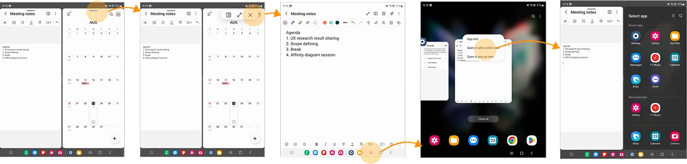
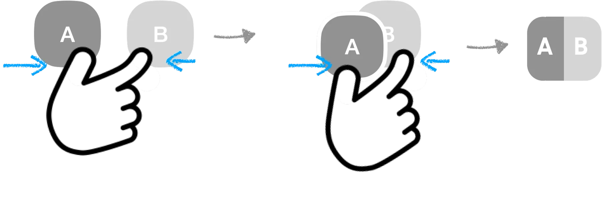
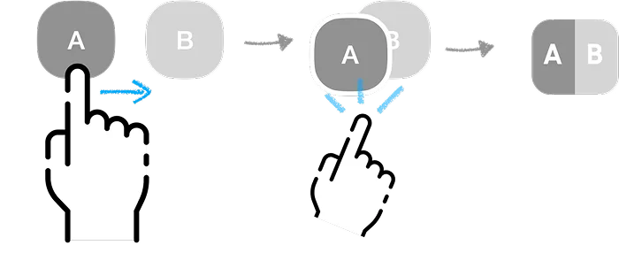
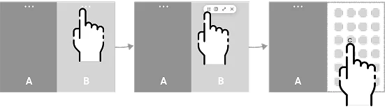
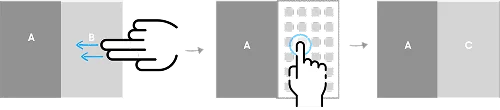

Split screen for Galaxy Z Fold
Fewer guesses, faster multitasking

Split screen was a headline feature of the Fold, but few people used it. Starting it took five to six steps through hidden menus and long-presses. I redesigned the model around drag and drop to pair apps and a visible switch button to swap them. Task time fell 35%, usage rose 15% three months after launch, and it became the core multitasking interaction for Samsung foldables.
A headline feature nobody used
Launching split screen took five to six steps, involved hidden menus and long-presses, and worked differently from app to app. People hesitated or gave up.
"I can't remember how to start split screen."Participant
Where people got stuck
I studied screen recordings of real multitasking, broke the flow into launching, pairing, switching, and exiting, and mapped where people dropped off.
- Most couldn't find how to start split screen at all
- Swapping one app inside a pair caused errors and hesitation
- Hidden gestures like long-press or pinch were almost never discovered

Exploring two problems
Launching an app pair


Pinch gesture
- Intuitive
- Limited by finger reach across pages
Drag and drop
- Intuitive and flexible
- Needs light guidance
Swapping one app in a pair


Switch button
- Visible and predictable
- One extra tap
Two-finger swipe
- Quick
- Hard to discover, less reliable
We tested with six people who multitask on Galaxy tablets or foldables.
"It's easy. Even my mom could spot the button."Participant, on the switch button
Validating the final design
- Average time to launch a pair: 2.3 seconds
- Average time to swap an app: 1.9 seconds
- Hesitation dropped as people repeated the task
The model shipped in One UI on Galaxy Z Fold and Flip, replaced several legacy methods that had caused confusion, and became the system-wide multitasking interaction.
Lesson learned
The fewest steps isn't always the fastest path.
A flow with one more step, but no guessing, beat the shorter one on task time.